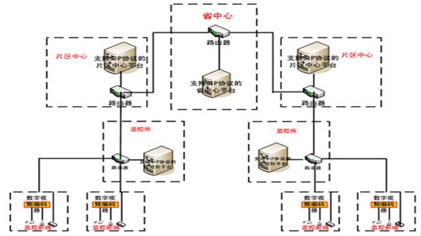
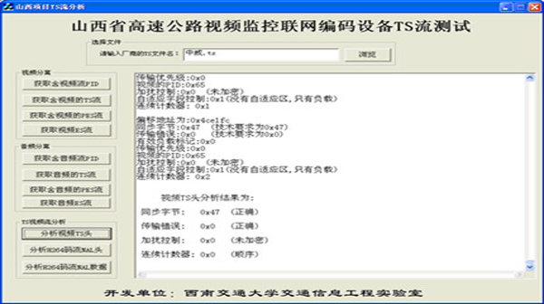
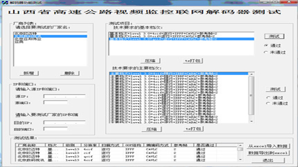
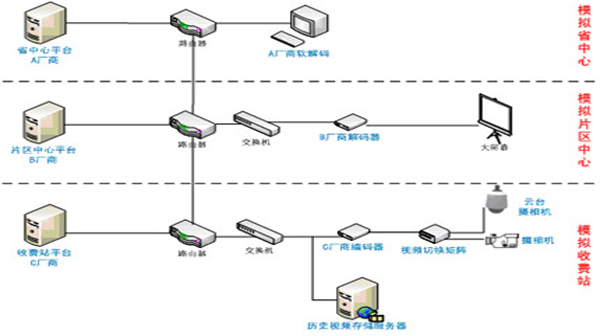

高速公路H.264视频监控联网技术协议制定、测试及推广应用
目前各省高速公路网发展迅速，交通监管任务日趋繁重。而视频监控技术作为一种十分有效的监管手段在高速公路的交通运输管理事务中扮演着重要角色。相对于以往模拟传输的视频信号，目前的视频监控系统多采用数字编码方式，实现数字化视频编码之后可以极大地降低视频信号的数据量，大大节约带宽。但是，H.264标准规模庞大，包含多种档次和级别，导致的结果是即使不同厂商的设备都使用H.264作为视频编码标准，也极有可能出现不同厂商的编解码设备无法互编互解的情况，同时在H.264码流的传输过程中为了使音视频流进行复合传输，还须对原始的H.264码流进行TS封装，这就为不同厂商设备的互编互解进一步带来了问题，因为不同厂商的TS封装也可能存在差异。同时，作为厂商的解码设备，其所支持的解码技术范围通常具有极大的局限性，即使同样都是符合H.264标准的码流，但由于具体使用的参数和技术细节不同，解码器也可能无法解码。相对于编解码等硬件设备，不同厂商用于管理各自设备的管理平台软件更难做到互联互通，因为各厂商的平台软件所使用的控制信令及通信协议全部为厂商自己的私有协议。所以以当前的情况，省中心/片区中心无法做到只使用一套系统来对不同收费站的监控业务进行调度指挥，并且不同的片区中心之间无法进行互联互控，严重阻碍了全省监控联网系统的统一协调和调度指挥。
-
总体技术概况
本项目实现了"省中心-片区中心-收费站/监控所"三级管理结构，省中心可以通过各片区中心的中转实现对所有监控前端设备的调度与控制。

三级管理结构
-
编码设备技术要求及测试软件
1) H.264部分： 对编码设备使用的H.264档次和级别、编码图像分辨率范围、编码帧率及调整策略、扫描编码方式、熵编码方式、GOP格式等内容进行了规范。 2) 音视频混合TS流封装部分：对TS流的封装格式、各字段内容进行规范，对TS音视频复合流音频数据字段标识进行规范。

编码器测试软件
-
解码设备技术要求及测试软件
1) H.264部分：应支持的H.264档次和级别、能够解码显示的图像分辨率范围、应支持的扫描方式、能够支持的GOP结构、支持的熵编码方式、支持的参考帧数目范围。2) 音视频混合TS流封装部分：能够识别视频TS码流并解码TS视频码流、能够识别音视频复合的TS码流、至少能够拆分出并解码音视频复合流中的视频码流。

解码器测试软件
-
管理平台软件SIP通信协议
1)协议规范部分：本项目采用SIP协议作为监控联网体系中的信令交互协议，为与高速公路视频监控具体业务需求相符，需对系统中使用的SIP协议作以下规范： •SIP消息头域的相关规范，如：属于同一会话过程的报文其Call-ID字段应相同；请求消息与应答消息的CSeq字段应一致；branch-tag字段不做校验。所有需要响应的请求消息均应携带Contact头域。Call-ID应作为区别不同会话的最重要标示。2) 报文设计部分：使用XML作为SIP信令的消息体，结合高速公路视频监控业务需求定义了大量的相关消息元素用于管理、监控、控制等业务。
SIP服务器端测试软件
-
三级管理结构综合监控业务
1) 联网结构拓扑图2) 推广应用描述： 三级管理结构拓扑图如图，省中心、片区中心、收费站分别为不同厂商的监控系统。收费站平台向片区中心平台注册，并上报设备节点信息，片区中心平台向省中心平台注册并上报设备节点信息。省中心平台选中某个监控摄像机节点向片区中心平台发送调看实时监控视频的请求，片区中心平台将请求转发给该摄像机所在的收费站平台，收费站平台将响应消息和视频流上传给片区中心平台，片区中心平台再将该响应消息和视频流上传给省中心平台。云台控制命令的发送以及历史视频回放命令的发送过程与此类似。

三级管理结构综合监控业务